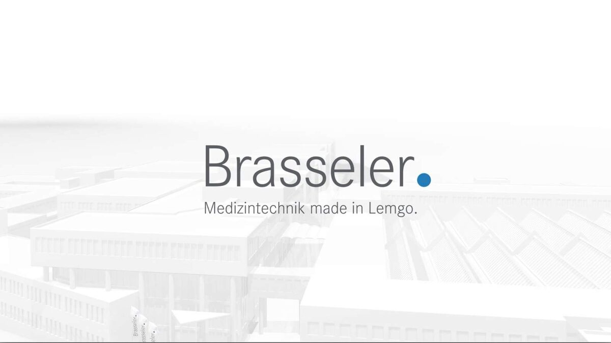

Medizintechnische Gebr. Brasseler Gruppe ernennt neuen Geschäftsführer
Veröffentlicht am 16.07.2024
Lemgo, 16.07.2024
- Alexander Bartel, bisher Bereichsleiter Supply Chain Management bei Brasseler, wurde zum 01.06.2024 in die Geschäftsführung berufen
- In der Geschäftsverteilung übernimmt er die Verantwortung für die Bereiche Supply Chain Management und Produktion von Stephan Köhler sowie den Bereich IT von Markus Trachternach
- Die Neuverteilung der Aufgaben erfolgt vor dem Hintergrund der Nachfolgeregelung von Klaus Rübesamen, der Ende 2025 in den Ruhestand tritt.
Die Medizintechnikgruppe Gebr. Brasseler Lemgo meldet die Ernennung von Herrn Alexander Bartel als Geschäftsführer zum 01.06.2024.
Herr Bartel trat Anfang 2018 in das Unternehmen ein. Seitdem hat er durch die Konzeption und Umsetzung der neuen Supply Chain und Fertigungsstrategie einen maßgeblichen Beitrag zur Steigerung der Wettbewerbsfähigkeit geleistet.

Stephan Köhler, Sprecher der Geschäftsführung: „Wir freuen uns sehr, dass Herr Bartel in der Geschäftsführung zukünftig die Wertschöpfungsbereiche und die IT verantwortet. Mit seiner langjährigen Managementerfahrung bei Brasseler und seiner Fachxpertise wird er die strategische Transformation mit seinen Teams und dem Managementteam mitgestalten. Die Kontinuität und die vorausschauende Übergabe der Aufgaben in der Geschäftsführung sind somit gewährleistet.“
In der Geschäftsführung übernimmt Alexander Bartel von Herrn Stephan Köhler die Verantwortung für die Bereiche Supply Chain Management und Produktion. Gleichzeitig wechselt der Bereich Informationstechnologie von Herrn Markus Trachternach zu Herrn Bartel. Die für die Weiterentwicklung der Brasselergruppe strategisch wichtigen Lean-Exzellenzprogramme werden weiter von Herrn Bartel verantwortet.
Alexander Bartel, Geschäftsführer: „Mein Ziel ist es, die begonnene strategische Entwicklung in den Wertschöpfungsbereichen erfolgreich fortzuführen. Digitalisierung und neue Technologien bieten ungeahnte Möglichkeiten für alle Unternehmensbereiche. Mit der Kultur des Lean Managements und unserem Willen zur stetigen Verbesserung sind wir für die Zukunft gut aufgestellt. Ich freue mich darauf, die Herausforderungen der Zeit gemeinsam mit den Brasseler-Teams anzugehen.“

Pressekontakt
Melanie Köhler
Unternehmenskommunikation
Telefon +49 (0) 160 3447748
presse@brasseler.de